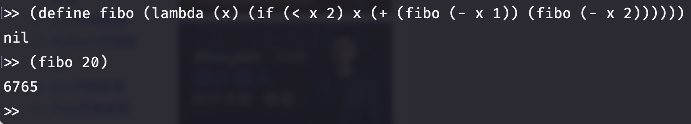
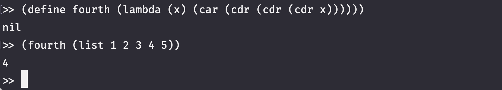

a better Lisp interpreter in Rust
Table of Contents
1. rlisp
rlisp is a better(compared with my previous project ILisp) Lisp interpreter written in Rust.
Motivated by lispy
I'm still learning Rust and my implementation is not smart and is of low performance.
1.1. Compared with ILisp
- more types
- lambda expression
- some list operations:
list,cons,append,car,cdr,map
1.2. Build & Run
git clone https://github.com/kabu1204/rlisp.git
cd rlisp
cargo run --release
1.3. Test
cargo test
1.4. Functions
| symbol | usage |
|---|---|
| define | (define sym expr) |
| if | (if cond conseq alt) |
| +, * | (Op arg1 arg2 …) |
| -, / | (Op arg1 arg2) |
| >,<,>=,<=,=,/= | (Cmp arg1* /arg2) |
| min, max | (min arg1 arg2) |
| abs | (abs arg) |
| begin | (begin expr1 … exprn) |
| quote | (quote expr) or 'expr |
| lambda | (lambda (params…) expr) |
| set! | (set! sym expr) |
| map | (map Op 'list…) |
| apply | (apply Op Atom… 'list) Atom is optional |
| car | (car 'list) |
| cdr | (cdr 'list) |
| append | (append 'list…) |
| cons | (cons 'Atom 'list) |
1.5. Examples
>> (define fibo (lambda (x) (if (< x 2) x (+ (fibo (- x 1)) (fibo (- x 2)))))) nil >> (fibo 20) 6765

>> (define fourth (lambda (x) (car (cdr (cdr (cdr x)))))) nil >> (fourth (list 1 2 3 4 5)) 4
